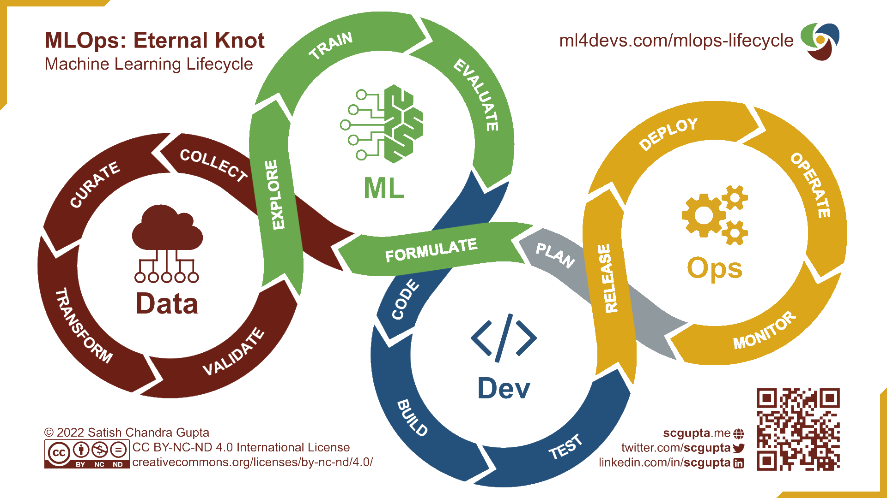
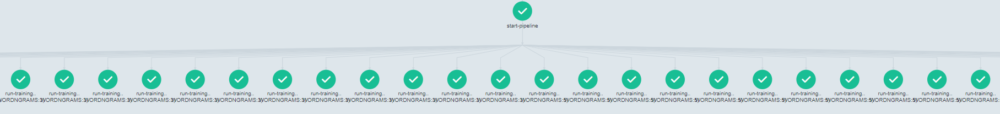
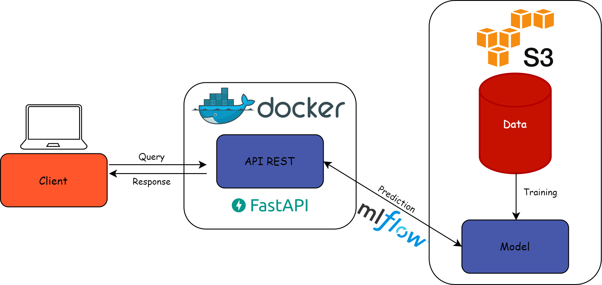
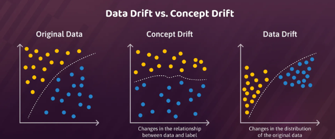
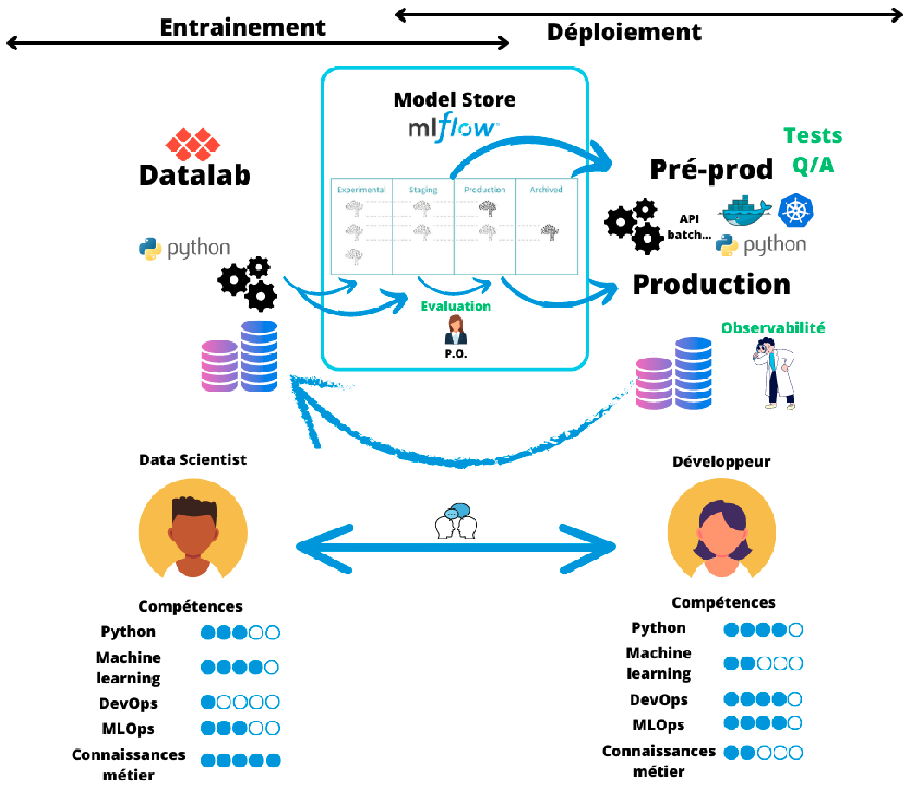
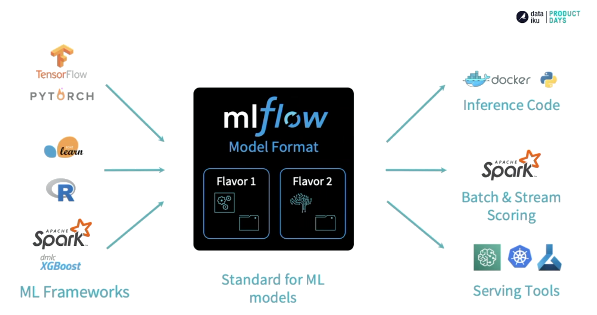
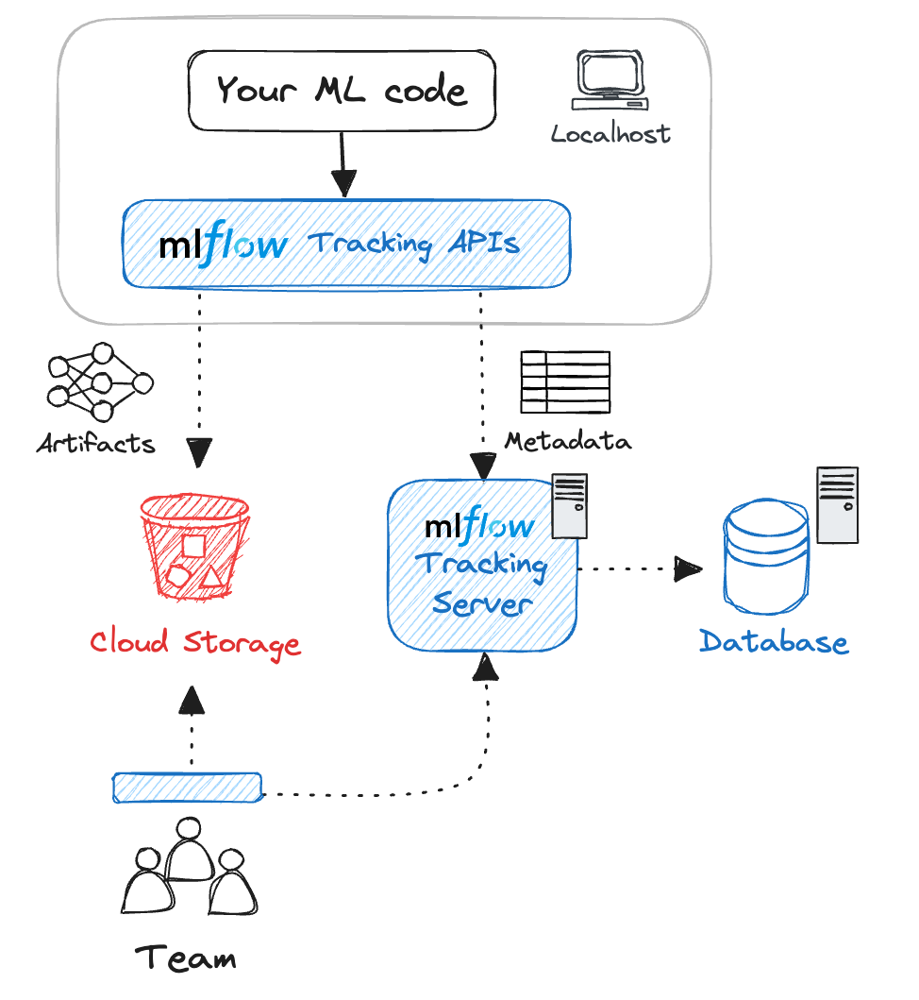

Introduction aux enjeux du MLOps
Introduction aux principes du MLOps pour le passage en production des applications de machine learning.
Dans les chapitres précédents, nous avons vu qu’une majorité des projets data-driven restaient au stade de l’expérimentation, et qu’une des raisons pour expliquer ce phénomène était l’existence de frictions empêchant l’amélioration continue des projets. Dans le cadre des projets basés sur des modèles de machine learning, cette problématique devient encore plus cruciale : en supplément des enjeux sur le cycle de vie de la donnée intervient la dimension supplémentaire du cycle de vie des modèles. Parmi les principaux enjeux, une question souvent éludée dans les enseignements ou les nombreuses ressources en ligne sur le machine learning est la problématique des ré-entraînements périodiques, guidés par l’utilisation faite des modèles et les retours des utilisateurs, afin de maintenir à jour la base de connaissance des modèles et ainsi garantir leur pouvoir prédictif. Ce sujet du ré-entraînement des modèles rend les aller-retours entre les phases d’expérimentation et de production nécessairement fréquents. Pour faciliter la mise en place de pipelines favorisant ces boucles de rétroaction, une nouvelle approche a émergé : le MLOps, qui vise là encore à mobiliser les concepts et outils issus de l’approche DevOps tout en les adaptant au contexte et aux spécificités des projets de machine learning.
Fondements du MLOps
Du DevOps au MLOps
L’approche MLOps s’est construite sur les bases de l’approche DevOps. En cela, on peut considérer qu’il s’agit simplement d’une extension de l’approche DevOps, développée pour répondre aux défis spécifiques liés à la gestion du cycle de vie des modèles de machine learning. Le MLOps intègre les principes de collaboration et d’automatisation propres au DevOps, mais prend également en compte tous les aspects liés aux données et aux modèles de machine learning.

A mettre en regard à la boucle du DevOps

Le MLOps implique l’automatisation des tâches telles que la gestion des données, le suivi des versions des modèles, leurs déploiements, ainsi que l’évaluation continue de la performance des modèles en production. De la même manière que le DevOps, le MLOps met l’accent sur la collaboration étroite entre les équipes de développement et d’administration système d’une part, ainsi que les équipes de data science d’autre part. Cette collaboration est clé pour garantir une communication efficace tout au long du cycle de vie du modèle de machine learning et fludifier le passage entre les étapes d’expérimentation et de passage en production.
Principes du MLOps
Puisque le MLOps est ainsi une extension des principes du DevOps aux enjeux du machine learning, les principes généraux sont les mêmes que ceux évoqués précédemment mais ceux-ci s’adaptent à la problématique de la gestion du cycle de vie d’un modèle:
la reproductibilité : les résultats de chaque expérimentation, fructueuse comme infructueuse, doivent pouvoir être reproduits sans coût. Cela implique d’abord une certaine rigueur dans la gestion des packages, la gestion des environnements, la gestion des librairies système, le contrôle de version du code, etc.
le contrôle de version: au-delà du simple suivi des versions du code, pour reproduire de manière identique les résultats d’un code c’est l’ensemble des inputs et paramètres influençant l’entraînement d’un modèle (données d’entraînement, hyper-paramètres, etc.) qui doivent être versionnées avec le modèle ;
l’automatisation : afin de favoriser les boucles rétroactives d’amélioration continue, le cycle de vie du modèle (tests, build, validation, déploiement) doit être automatisé au maximum. Les outils issus de l’approche DevOps, en particulier l’intégration et déploiement continus (CI/CD), doivent être mobilisés ;
la collaboration : valoriser une culture de travail collaborative autour des projets de ML, dans laquelle la communication au sein des équipes doit permettre de réduire le travail en silos et bénéficier des expertises des différents métiers parti prenantes d’un modèle (analystes, data engineers, devs..). Sur le plan technique, les outils MLOps utilisés doivent favoriser le travail collaboratif sur les données, le modèle et le code utilisés par le projet ;
l’amélioration continue : une fois déployé, il est essentiel de s’assurer que le modèle fonctionne bien comme attendu en évaluant ses performances sur des données réelles à l’aide d’outils de monitoring en continu. Dans le cas d’une dégradation des performances dans le temps, un ré-entraînement périodique ou un entraînement en continu du modèle doivent être envisagés.
Pour plus de détails, voir Kreuzberger, Kühl, and Hirschl (2023).
Spécificités liées à la mise en production de modèles de ML
1️⃣ Entraînements des modèles
La première étape d’un projet de machine learning correspond à tout ce que l’on effectue jusqu’à l’entraînement des premiers modèles. Cette étape est un processus itératif et fastidieux qui ne suit pas un développement linéaire : les méthodes de récupération des données peuvent être changeantes, le preprocessing peut varier, de même que la sélection des features pour le modèle (feature engineering), et les algorithmes testés peuvent être nombreux… On est donc aux antipodes des hypothèses habituelles de stabilité nécessaires à l’entraînement et la validité externe dans les enseignements de machine learning.
Garder une trace de tous les essais effectués apparaît indispensable afin de savoir ce qui a fonctionné ou non. Le besoin d’archiver ne concerne pas que les métriques de performances associées à un jeu de paramètres. Ceux-ci ne sont qu’une partie des ingrédients nécessaires pour aboutir à une estimation. L’ensemble des inputs d’un processus de production (code, données, configuration logicielle, etc.) est également à conserver pour être en mesure de répliquer une expérimentation.
MLFlow, un environnement idéal pour archiver des expérimentations
La phase exploratoire est rendue très simple grâce au Tracking Server de MLFlow. Comme cela sera expliqué ultérieurement, lors de l’exécution d’un run, MLflow enregistre tout un tas de métadonnées qui permettent de retrouver toutes les informations relatives à ce run : la date, le hash du commit, les paramètres du modèle, le dataset utilisé, les métriques spécifiées, etc. Cela permet non seulement de comparer les différents essais réalisés, mais aussi d’être capable de reproduire un run passé.
De manière générale, cette phase exploratoire est réalisée par le data scientist ou le ML engineer dans des notebooks. Ces notebooks sont en effet parfaitement adaptés pour cette étape puisqu’ils permettent une grande flexibilité et sont particulièrement commodes pour effectuer des tests. En revanche, lorsque l’on souhaite aller plus loin et que l’on vise une mise en production de son projet, les notebooks ne sont plus adaptés, et cela pour diverses raisons :
- la collaboration est grandement limitée à cause d’une compatibilité très faible avec les outils de contrôle de version standard (notamment
Git). - l’automatisation de pipeline est beaucoup plus compliquée et peu lisible. Il existe certes des packages qui permettent d’automatiser des pipelines de notebooks comme Elyra par exemple, mais ce n’est clairement pas l’approche que nous vous recommandons car les scripts sont beaucoup moins usine à gaz.
- Les workflows sont souvent moins clairs, mal organisés (toutes les fonctions définies dans le même fichier affectant la lisibilité du code par exemple) voire peu reproductibles car les cellules sont rarement ordonnées de sorte à exécuter le code de manière linéaire.
- Les notebooks offrent généralement une modularité insuffisante lorsque l’on veut travailler avec des composants de machine learning complexes.
Toutes ces raisons nous amènent à vous conseiller de réduire au maximum votre utilisation de notebooks et de restreindre leur utilisation à la phase exploratoire ou à la diffusion de résultats/rapports. Passer le plus tôt possible à des scripts .py vous permettra de réduire le coût de la mise en production. Pour reprendre ce qui a déjà été évoqué dans le chapitre Architecture des projets, nous vous invitons à favoriser une structure modulaire de sorte à pouvoir industrialiser votre projet.
Une autre spécificité pouvant impacter la mise en production concerne la manière dont l’entraînement est réalisé. Il existe pour cela 2 écoles qui ont chacune leurs avantages et désavantages : le batch training et l’online training.
Batch training
Le batch training est la manière usuelle d’entraîner un modèle de machine learning. Cette méthode consiste à entraîner son modèle sur un jeu de données fixe d’une seule traite. Le modèle est entraîné sur l’intégralité des données disponibles et les prédictions sont réalisées sur de nouvelles données. Cela signifie que le modèle n’est pas mis à jour une fois qu’il est entraîné, et qu’il est nécessaire de le ré-entraîner si l’on souhaite ajuster ses poids. Cette méthode est relativement simple à mettre en œuvre : il suffit d’entraîner le modèle une seule fois, de le déployer, puis de le ré-entraîner ultérieurement en cas de besoin. Cependant, cette simplicité comporte des inconvénients : le modèle reste statique, nécessitant un ré-entraînement fréquent pour intégrer de nouvelles données. Par exemple, dans le cas de la détection de spams, si un nouveau type de spam apparaît, le modèle entraîné en batch ne sera pas capable de le détecter sans un ré-entraînement complet. De plus, cette méthode peut rapidement exiger une grande quantité de mémoire en fonction de la taille du jeu de données, ce qui peut poser des contraintes sur l’infrastructure et prolonger considérablement le temps d’entraînement.
Online training
L’online training se présente comme l’antithèse du batch training, car il se déroule de manière incrémentale. Dans ce mode d’entraînement, de petits lots de données sont envoyés séquentiellement à l’algorithme, ce qui permet à celui-ci de mettre à jour ses poids à chaque nouvelle donnée reçue. Cette approche permet au modèle de détecter efficacement les variations dans les données en temps réel. Il est toutefois crucial de bien ajuster le learning rate afin d’éviter que le modèle oublie les informations apprises sur les données précédentes. L’un des principaux avantages de cette méthode est sa capacité à permettre un entraînement continu même lorsque le modèle est en production, ce qui se traduit par une réduction des coûts computationnels. De plus, l’online training est particulièrement adapté aux situations où les données d’entrée évoluent fréquemment, comme dans le cas des prédictions de cours de bourse. Cependant, sa mise en œuvre dans un contexte de production est bien plus complexe que celle du batch training, et les frameworks traditionnels de machine learning tels que Scikit-learn, PyTorch, TensorFlow et Keras ne sont pas compatibles avec cette approche.
Distribuer l’optimisation des hyperparamètres
Une autre spécificité des modèles de machine learning réside dans le nombre important d’hyperparamètres à optimiser, lesquels peuvent sensiblement impacter les performances du modèle. L’approche standard pour réaliser cette optimisation est ce qu’on appelle un Grid Search. Il s’agit simplement de lister toutes les combinaisons d’hyperparamètres à tester et d’entraîner successivement des modèles avec ces combinaisons prédéfinies. Il n’est pas difficile de comprendre que cette technique est très coûteuse en temps de calcul lorsque le nombre d’hyperparamètres à optimiser et leurs modalités à tester sont élevés. Cependant, cette optimisation est indispensable pour entraîner le meilleur modèle pour notre tâche, et si s’inspirer de la littérature est crucial pour limiter le domaine d’optimisation de nos hyperparamètres, réaliser un Grid Search est une étape incontournable.
Ainsi, pour s’inscrire dans l’approche du MLOps, une bonne méthode est d’automatiser cette optimisation des hyperparamètres en la distribuant sur un cluster lorsqu’on dispose de l’infrastructure adéquate. L’idée est de créer des processus indépendants, chacun liés à une combinaison de nos hyperparamètres, et d’entraîner notre modèle sur ceux-ci puis d’enregister les informations à archiver dans un environnement adéquat, par exemple dans MLFlow.
Il existe un moteur de workflow populaire pour orchestrer des tâches parallèles sur un cluster Kubernetes : Argo Workflow. Le principe est de définir un workflow dans lequel chaque étape correspond à un conteneur contenant uniquement ce qui est strictement nécessaire à l’exécution de cette étape. Ainsi, on s’approche de la perfection en ce qui concerne la reproductibilité, car on maîtrise totalement les installations nécessaires à l’exécution de notre entraînement. Un workflow à plusieurs étapes peut ainsi être modélisé comme un graphe acyclique orienté, et l’exemple ci-dessous représente un cas d’optimisation d’hyperparamètres :

Cette approche permet d’exécuter facilement en parallèle des tâches intensives en calcul de manière totalement reproductible. Évidemment, l’utilisation de tels workflows ne se limite pas à l’optimisation d’hyperparamètres mais peut également être utilisée pour le preprocessing de données, la création de pipelines d’ETL, etc. D’ailleurs, à l’origine, ces outils ont été pensé pour ces tâches et permettent ainsi de définir un processus de données comme un ensemble de transformations sous la forme de diagramme acyclique dirigé (DAG).
2️⃣ Servir un modèle ML à des utilisateurs
Une partie très importante, parfois négligée, des projets de machine learning est la mise à disposition des modèles entraînés à d’autres utilisateurs. Puisque vous avez parfaitement suivi les différents chapitres de ce cours, votre projet est en théorie totalement reproductible. Une manière triviale de transmettre le modèle que vous avez sélectionné serait de partager votre code et toutes les informations nécessaires pour qu’une personne tierce ré-entraîne votre modèle de son côté. Évidemment, ce procédé n’est pas optimal, car il suppose que tous les utilisateurs disposent des ressources/infrastructures/connaissances nécessaires pour réaliser l’entraînement.
L’objectif est donc de mettre à disposition votre modèle de manière simple et efficace. Pour cela, plusieurs possibilités s’offrent à vous en fonction de votre projet, et il est important de se poser quelques questions préalables :
- Quel format est le plus pertinent pour mettre à disposition des utilisateurs ?
- Les prédictions du modèle doivent-elles être réalisées par lots (batch) ou en temps réel (online) ?
- Quelle infrastructure utiliser pour déployer notre modèle de machine learning ?
Dans le cadre de ce cours, nous avons choisi d’utiliser une API REST pour mettre à disposition un modèle de machine learning. Cela nous semble être la méthode la plus adaptée dans une grande majorité des cas, car elle répond à plusieurs critères :
- Simplicité : les API REST permettent de créer une porte d’entrée qui peut cacher la complexité sous-jacente du modèle, facilitant ainsi sa mise à disposition.
- Standardisation : l’un des principaux avantages des API REST est qu’elles reposent sur le standard HTTP. Cela signifie qu’elles sont agnostiques au langage de programmation utilisé et que les requêtes peuvent être réalisées en XML, JSON, HTML, etc.
- Modularité : le client et le serveur sont indépendants. En d’autres termes, le stockage des données, l’interface utilisateur ou encore la gestion du modèle sont complètement séparés de la mise à disposition (le serveur).
- Passage à l’échelle : la séparation entre le serveur et le client permet aux API REST d’être très flexibles et facilite le passage à l’échelle (scalability). Elles peuvent ainsi s’adapter à la charge de requêtes concurrentes.
L’exposition d’un modèle de machine learning peut être résumée par le schéma suivant :

Comme le montre le schéma, l’API est exécutée dans un conteneur afin de garantir un environnement totalement autonome et isolé. Seules les dépendances nécessaires à l’exécution du modèle et au fonctionnement de l’API ne sont intégrées à ce conteneur. Travailler avec des images docker légères présente plusieurs avantages. Tout d’abord, créer une image ne contenant que le strict nécessaire au fonctionnement de votre application permet justement de savoir ce qui est absolument indispensable et ce qui est superflu. De plus, plus votre image est légère, plus son temps de téléchargement depuis votre Hub d’images (e.g. Dockerhub) sera rapide à chaque création de conteneur de votre application. Les conteneurs ont l’avantage d’être totalement portables et offrent la possibilité de mettre à l’échelle votre application de manière simple et efficace. Par exemple, si l’on imagine que vous avez déployé votre modèle et que vous souhaitez le requêter un grand nombre de fois dans un laps de temps court, il est alors préférable de créer plusieurs instances de votre application pour que les calculs puissent être effectués en parallèle. L’avantage de procéder de cette manière est qu’une fois qu’on a créé l’image sous-jacente à notre application, il est ensuite très simple de créer une multitude de conteneurs (replicas) toutes basées sur l’image en question.
Pour tout ce qui concerne le déploiement de votre application, vous pouvez vous référer au chapitre Mise en production. Techniquement, il n’y a aucune difficulté supplémentaire lorsque l’on veut avoir une approche MLOps lors de cette étape. L’unique subtilité à avoir en tête est que l’on souhaite maintenant faire communiquer notre application avec MLflow. En effet, chaque déploiement est basé sur une version particulière du modèle et il est nécessaire de renseigner quelques informations afin de récupérer le bon modèle au sein de notre entrepôt de modèle. Comme pour tout déploiement sous Kubernetes, il faut tout d’abord créer les 3 fichiers YAML : deployment.yaml, service.yaml, ingress.yaml. Ensuite, comme vous pouvez le voir sur le schéma, notre API doit pouvoir être reliée à MLflow qui lui-même a besoin d’être connecté à un espace de stockage (ici s3/MinIO) qui contient l’entrepôt des modèles. Pour cela, dans le fichier deployment.yaml, on rajoute simplement quelques variables d’environnement qui nous permettent de créer de lien à savoir :
- MLFLOW_S3_ENDPOINT_URL : L’URL de l’endpoint S3 utilisé par MLflow pour stocker les données (et modèles)
- MLFLOW_TRACKING_URI : L’URI du serveur de suivi MLflow, qui spécifie où les informations concernant les modèles sont stockées.
- AWS_ACCESS_KEY_ID : L’identifiant d’accès utilisé pour authentifier l’accès aux services de stockage s3.
- AWS_SECRET_ACCESS_KEY : La clé secrète utilisée pour authentifier l’accès aux services de stockage s3.
- AWS_DEFAULT_REGION : Identifie la région S3 pour laquelle vous souhaitez envoyer les demandes aux serveurs.
Pour faciliter le déploiement continu (voir chapitre Mise en production), il est conseillé de rajouter des variables d’environnement spécifiant la version du modèle à déployer ainsi que le nom du modèle à déployer. En effet, en spécifiant ces valeurs dans le fichier deployment.yaml, cela va permettre de déclencher un nouveau déploiement dès lors que l’on modifiera ces valeurs.
Il est bon de noter que MLflow permet également de déployer directement un modèle MLflow. Vous pouvez aller regarder la documentation si cela vous intéresse. Cette option est relativement récente et pas encore tout à fait mature mais se base sur les mêmes technologies que celles présentées dans ce cours (Kubernetes, S3, etc.). C’est pour cela que nous avons préféré détailler le développement de notre propre API en utilisant le framework FastAPI, qui est devenu le standard pour le développement d’API en Python.
Déployer sur Kubernetes (plutot dans chap mise en prod ?)
Batch vs real-time prediction
3️⃣ Observabilité en temps réel d’un modèle de ML
Une fois la modélisation réalisée, le modèle entraîné, optimisé et mis à disposition des utilisateurs grâce à un déploiement sur un serveur, on peut considérer que le travail est fini. Du point de vue du data-scientist stricto sensu, cela peut être le cas, puisque l’on considère souvent que le domaine du data-scientist s’arrête à la sélection du modèle à déployer, le déploiement étant réalisé par ce qu’on appelle les data-engineers. Pourtant, une fois déployé dans un environnement de production, le modèle n’a pas réalisé l’intégralité de son cycle de vie. En production, le cycle de vie d’un modèle de machine learning suivant l’approche MLOps peut être schématisé de la manière suivante :
On retrouve les différentes composantes du MLOps avec les données (DataOps), les modèles (ModelOps) et le code (DevOps). Ces composantes rendent le cycle de vie d’un modèle de machine learning complexe impliquant plusieurs parties prenantes autour du projet. En règle générale, on observe trois parties prenantes principales :
- Data-scientists/Data-engineers
- IT/DevOps
- Équipes métiers
Quelques fois, les data-scientists peuvent être intégrés aux équipes métiers et les data-engineers aux équipes IT. Cela peut simplifier les échanges entre les deux équipes, mais cela peut également entraîner un travail en silos et cloisonner les deux équipes aux expertises, attentes et vocabulaires très différents. Or, la communication est primordiale pour permettre une bonne gestion du cycle de vie du modèle de machine learning et notamment pour surveiller le modèle dans son environnement de production.
Il est extrêmement important de surveiller comment le modèle se comporte une fois déployé pour s’assurer que les résultats renvoyés sont conformes aux attentes. Cela permet d’anticiper des changements dans les données, une baisse des performances ou encore d’améliorer le modèle de manière continue. Il est également nécessaire que notre modèle soit toujours accessible, que notre application soit bien dimensionnée, etc. C’est pour cela que la surveillance (monitoring) d’un modèle de machine learning est un enjeu capital dans l’approche MLOps.
Le terme surveillance peut renvoyer à plusieurs définitions en fonction de l’équipe dans laquelle l’on se situe. Pour une personne travaillant dans l’équipe informatique, surveiller une application signifie vérifier sa validité technique. Elle va donc s’assurer que la latence n’est pas trop élevée, que la mémoire est suffisante ou encore que le stockage sur le disque est bien proportionné. Pour un data-scientist ou une personne travaillant dans l’équipe métier, ce qui va l’intéresser est la surveillance du modèle d’un point de vue méthodologique. Malheureusement, il n’est pas souvent évident que contrôler la performance en temps réel d’un modèle de machine learning. Il est rare que l’on connaisse la vraie valeur au moment de la prédiction du modèle (sinon on ne s’embêterait pas à construire un modèle !) et on ne peut pas vraiment savoir s’il s’est trompé ou non. Il est donc commun d’utiliser des proxies pour anticiper une potentielle dégradation de la performance de notre modèle. On distingue généralement 2 principaux types de dégradation d’un modèle de machine learning : le data drift et le concept drift.

Data drift
On parle de data drift lorsque l’on observe un changement de distribution dans les données utilisées en entrée du modèle. En d’autres termes, il y a data drift lorsque les données utilisées lors de l’entraînement sont sensiblement différentes des données utilisées lors de l’inférence en production. Imaginons que vous souhaitez repérer des habitations à partir d’images satellites. Vous entraînez votre modèle sur des données datant par exemple de février 2022, et une fois en production vous essayer de repérer les habitations tous les mois suivants. Vous constatez finalement durant l’été que votre modèle n’est plus du tout aussi performant puisque les images satellites de juillet diffèrent fortement de celle de février. La distribution des données d’entraînement n’est plus proche de celle d’inférence, \(P_{train}(X) \neq P_{inference}(X)\). Les data drifts apparaissent dès lors que les propriétés statistiques des données changent et cela peut venir de plusieurs facteurs en fonction de votre modèle : changements de comportement, dynamique de marché, nouvelles réglementations politiques, problème de qualité des données, etc. Il n’est pas si simple de détecter rapidement des data drifts, cela suppose de surveiller de manière continue la distribution des données en entrée et en sortie de votre modèle sur un certain laps de temps et d’identifier quand celles-ci diffèrent significativement de la distribution des données d’entraînement. Pour obtenir une idée visuelle, on peut créer des représentations graphiques comme des histogrammes pour comparer les distributions à plusieurs périodes dans le temps, voire des boîtes à moustaches. On peut aussi calculer des métriques, qui seront plus simples d’utilisation si l’on souhaite automatiser un système d’alerte, comme des distances entre distributions (distance de Bhattacharyya, divergence de Kullback-Leibler, distance de Hellinger) ou effectuer des tests statistiques (Test de Kolmogorov-Smirnov, Test du χ²). Pour résumer, la détection d’un data drift peut s’effectuer en plusieurs étapes :
- Définition d’une référence : on définit la distribution de référence (e.g. celle utilisée lors de l’entraînement).
- Définition de seuils : on détermine en dessous de quelles valeurs de nos métriques cela peut être considéré comme un data drift.
- Surveillance continue : soit en temps réel, soit de manière périodique (relativement courte), on compare nos distributions et on calcule les métriques définies préalablement.
- Alerte et correction : on met en place un système d’alerte automatique dès lors que nos métriques indiquent la présence d’un data drift, puis on agit en conséquence (ré-entraînement sur de nouvelles données, ajustement des paramètres du modèle, etc.).
Concept drift
On parle de concept drift lorsque l’on observe un changement dans la relation statistique entre les features (\(X\)) et la variable à prédire (\(Y\)) au cours du temps. En termes mathématiques, on considère qu’il y a un concept drift dès lors que \(P_{train}(Y|X) \neq P_{inference}(Y|X)\) alors même que \(P_{train}(X) = P_{inference}(X)\). Cela peut avoir un impact important sur les performances du modèle si la relation diffère fortement. Par exemple, un modèle de prédiction de la demande de masques chirurgicaux entraîné sur des données avant la pandémie de COVID-19 deviendra totalement inadéquat pour effectuer des prédictions lors de cette pandémie, car il y a eu un changement dans la relation entre la demande de masques chirurgicaux et les features utilisées pour prédire cette demande. Dans le cas d’un concept drift, on sera plus tenté de surveiller des métriques de performance pour repérer une potentielle anomalie. Dans le cas où l’on possède un jeu de test gold standard, alors on sera en capacité de calculer de nombreuses métriques usuelles de machine learning (à savoir l’accuracy, la precision, le recall ou le F1-score pour des problèmes de classification, et toutes les métriques d’erreurs - MSE, RMSE, MAE, … - pour les problèmes de régression) et repérer une baisse tendancielle ou brutale des performances. Dans le cas où l’on n’a pas de jeu de test gold standard, on s’attachera à déterminer des proxys qui peuvent être liés à des métriques de performance ou alors utiliser des algorithmes de détection de changement dans le flux de données (Drift Detection Method, Early Drift Detection Method, Adaptive Windowing).
4️⃣ Ré-entraînement d’un modèle ML
Dès lors que l’on a constaté une baisse de la performance de notre modèle grâce à notre surveillance fine, il faut ensuite pallier au problème et redéployer un modèle avec des performances satisfaisantes. On est donc à la fin du cycle de vie de notre modèle, ce qui va nous reconduire au début du cycle pour un nouveau modèle comme l’illustre la figure Figure 1. Le ré-entraînement est partie intégrante d’un projet de machine learning dès lors que celui-ci est mis en production. Il existe plusieurs méthodes pour ré-entraîner de la plus basique à la plus MLOps-compatible.
La méthode classique est de réaliser un nouvel entraînement from scratch en ajoutant les nouvelles données à notre disposition dans le jeu d’entraînement. Cela permet au modèle de connaître les dernières relations entre les features et la variable à prédire. Cependant, ré-entraîner un modèle peut être particulièrement coûteux lorsque l’on travaille sur de gros modèles dont les ressources computationnelles nécessaires sont importantes. Il est aussi possible de fine-tuner un modèle déjà pré-entraîné. Dans ce cas-là, on n’a pas besoin de repartir de zéro, on repart des poids optimisés lors du premier entraînement et on les ré-optimise en utilisant les nouvelles données à notre disposition. Cette méthode est naturellement beaucoup moins longue à réaliser et est moins coûteuse, notamment lorsque la quantité de nouvelles données est faible par rapport à la quantité des données utilisées lors du premier entraînement.
L’approche MLOps consiste à automatiser ce ré-entraînement, qu’on appelle également entraînement continu, de sorte à obtenir un cycle de vie totalement automatisé. En effet, le ré-entraînement est fondamental pour s’assurer que le modèle de machine learning est constamment en train de fournir des prédictions cohérentes, tout en minimisant les interventions manuelles. L’objectif est donc de créer un processus qui lance de nouveaux entraînements de manière automatique en prenant en compte les dernières informations disponibles. Les entraînements peuvent être déclenchés soit de manière périodique (tous les lundis à 2h du matin), dès lors qu’une alerte a été déclenchée dans notre système de monitoring, ou bien dès qu’on a une quantité de nouvelles données suffisante pour réaliser un online training par exemple.
L’utilisation d’outils d’orchestration de workflow comme Argo Workflow ou Airflow est donc indispensable pour réaliser cette automatisation de manière pertinente.
5️⃣ Défis organisationnels du MLOps
Outre les spécificités techniques précédemment explicitées, le MLOps présente également plusieurs défis en termes organisationnels et managériaux. En effet, dans la plupart des organisations, les équipes data transverses ou intégrées dans différents départements métier sont relativement jeunes et peuvent manquer de ressources qualifiées pour gérer le déploiement et le maintien en condition opérationnelle de systèmes ML complexes. Ces équipes se composent principalement de data scientists qui se concentrent sur le développement des modèles de machine learning, mais n’ont pas les compétences nécessaires pour gérer le déploiement et la maintenance d’applications complètes.
De plus, les équipes data évoluent encore trop souvent en silo, sans communiquer avec les différentes équipes techniques avec lesquelles elles devraient interagir pour mettre en production leurs modèles. Or ces équipes techniques, souvent composées d’informaticiens/développeurs, ne connaissent pas forcément les spécificités des modèles de machine learning, accentuant d’autant plus la nécessité d’une communication continue entre ces équipes.
Une autre difficulté pouvant intervenir lors du déploiement est la différence d’environnements utilisés ainsi que les différents langages connus entre les deux équipes. Il n’est pas rare que les data-scientists développent des modèles en Python tandis que les équipes informatiques gèrent leur serveur de production dans un langage différent, comme Java par exemple.
Ainsi, l’approche MLOps engendre aussi des défis managériaux qui impliquent de faire converger les compétences entre les équipes afin de fluidifier la mise en production de modèles de machine learning.

Implémentation de l’approche MLOps avec MLflow
Pourquoi MLflow ?
Il existe aujourd’hui de nombreux outils pour orchestrer des tâches et des pipelines de données. Parmi les plus populaires (selon leur ⭐ GitHub), on peut citer Airflow, Luigi, MLflow, Argo Workflow, Prefect ou encore Kubeflow, BentoML… Il est difficile d’affirmer s’il y en a un meilleur qu’un autre ; en réalité, votre choix dépend surtout de votre infrastructure informatique et de votre projet. En l’occurrence ici, nous avons fait le choix d’utiliser MLflow pour sa simplicité d’utilisation grâce à une interface web bien faite, parce qu’il intègre l’ensemble du cycle de vie d’un modèle et également parce qu’il s’intègre très bien avec Kubernetes. De plus, il est présent dans le catalogue du SSP Cloud, ce qui simplifie grandement son installation. Afin d’intégrer les dimensions d’intégration et de déploiement continus, nous utiliserons également Argo CD et Argo Workflow dans la boucle. Ceux-ci sont privilégiés par rapport à Airflow car ils sont optimisés pour les clusters Kubernetes qui représentent aujourd’hui la norme des cloud en ligne ou on premise.

MLFlow. Source: https://dzlab.github.ioMLflow est une plateforme qui permet d’optimiser le développement du cycle de vie d’un modèle de machine learning. Elle permet de suivre en détail les différentes expérimentations, de packager son code pour garantir la reproductibilité, et de servir un modèle à des utilisateurs. MLFlow possède également une API qui permet d’être compatible avec la majorité des librairies de machine learning (PyTorch, Scikit-learn, XGBoost, etc.) mais également différents langages (Python, R et Java).
Les projets MLflow
MLflow propose un format pour packager son projet de data science afin de favoriser la réutilisation et la reproductibilité du code. Ce format s’appelle tout simplement MLflow Project. Concrètement, un MLflow project n’est rien d’autre qu’un répertoire contenant le code et les ressources nécessaires (données, fichiers de configuration…) pour l’exécution de votre projet. Il est résumé par un fichier MLproject qui liste les différentes commandes pour exécuter une pipeline ainsi que les dépendances nécessaires. En général, un projet MLflow a la structure suivante :
Projet_ML/
├── artifacts/
│ ├── model.bin
│ └── train_text.txt
├── code/
│ ├── main.py
│ └── preprocessing.py
├── MLmodel
├── conda.yaml
├── python_env.yaml
├── python_model.pkl
└── requirements.txtEn plus de packager son projet, MLflow permet également de packager son modèle, quel que soit la librairie de machine learning sous-jacente utilisée (parmi celles compatibles avec MLflow, c’est-à-dire toutes les librairies que vous utilisez !). Ainsi, deux modèles entraînés avec des librairies différentes, disons PyTorch et Keras, peuvent être déployés et requêtés de la même manière grâce à cette surcouche ajoutée par MLflow.

Il est également possible de packager son propre modèle personnalisé ! Pour cela vous pouvez suivre le tutoriel présent dans la documentation.
Autrement dit, un projet MLFlow archive l’ensemble des éléments nécessaires pour reproduire un entraînement donné d’un modèle ou pour réutiliser celui-ci à tout moment.
Le serveur de suivi (tracking server)
Le tracking server est le lieu où sont archivés l’ensemble des entraînements d’un modèle. Attention, il ne s’agit pas du serveur sur lequel les modèles sont entraînés mais de celui où les entraînements sont archivés après avoir eu lieu. Au-delà de stocker seulement les poids d’un modèle, c’est l’ensemble de l’environnement nécessaire qui peut être retrouvé dans ce serveur.

Techniquement, cela prend la forme d’une API et d’une interface utilisateur pour enregistrer les paramètres, les versions du code, les métriques ou encore les artefacts associés à un entraînement.

En arrière plan, MLFlow va enregistrer tout ceci dans un bucket S3. Néanmoins, l’utilisateur n’aura pas à se soucier de cela puisque c’est MLFLow qui fera l’interface entre l’utilisateur et le système de stockage. Avec son API, MLFLow fournit même une manière simplifiée de récupérer ces objets archivés, par exemple avec un code prenant la forme
import mlflow
model = mlflow.pyfunc.load_model(model_uri="runs:/d16076a3ec534311817565e6527539c")Le tracking server est très utile pour comparer les différentes expérimentations que vous avez effectuées, pour les stocker et également pour être capable de les reproduire. En effet, chaque run sauvegarde la source des données utilisées, mais également le commit sur lequel le run est basé.
A la manière de Git qui permet d’identifier chaque moment de l’histoire d’un projet à partir d’un identifiant unique, MLFlow permet de récupérer chaque entraînement d’un modèle à partir d’un SHA. Néanmoins, en pratique, certains modèles ont un statut à part, notamment ceux en production.
L’entrepôt de modèles (model registry)
Une fois que l’on a effectué différentes expérimentations et pu sélectionner les modèles qui nous satisfont, il est temps de passer à l’étape suivante du cycle de vie d’un modèle. En effet, le modèle choisi doit ensuite pouvoir passer dans un environnement de production ou de pré-production. Or, connaître l’état d’un modèle dans son cycle de vie nécessite une organisation très rigoureuse et n’est pas si aisé. MLflow a développé une fonctionnalité qui permet justement de simplifier cette gestion des versions des modèles grâce à son Model Registry. Cet entrepôt permet d’ajouter des tags et des alias à nos modèles pour définir leur position dans leur cycle de vie et ainsi pouvoir les récupérer de manière efficace.
De manière générale, un modèle de machine learning passe par 4 stades qu’il est nécessaire de connaître en tout temps :
- Expérimental
- En évaluation
- En production
- Archivé

MLflow en résumé
MLflow est donc un projet open-source qui fournit une plateforme pour suivre le cycle de vie d’un modèle de machine learning de bout en bout. Ce n’est pas le seul outil disponible et il n’est peut-être pas le plus adapté à certains de vos projets précis. En revanche, il présente selon nous plusieurs avantages, en premier lieu sa prise en main très simple et sa capacité à répondre aux besoins de l’approche MLOps. Il faut garder à l’esprit que cet environnement est encore très récent et que de nouveaux projets open-source émergent chaque jour, donc il est nécessaire de rester à jour sur les dernières évolutions.
Pour résumer, MLFlow permet :
- de simplifier le suivi de l’entraînement des modèles de machine learning grâce à son API et à son tracking server
- d’intégrer les principaux frameworks de machine learning de manière simple
- d’intégrer son propre framework si besoin
- de standardiser son script d’entraînement et donc de pouvoir l’industrialiser, pour réaliser un fine-tuning des hyperparamètres, par exemple
- de packager ses modèles, de sorte à pouvoir les requêter de manière simple et harmonisée entre les différents frameworks
- de stocker ses modèles de manière pertinente en leur affectant des tags et en favorisant le suivi de leur cycle de vie